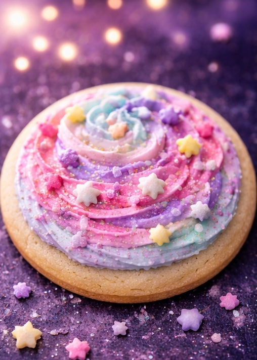
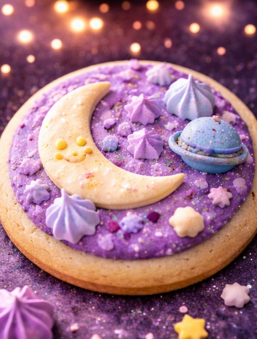
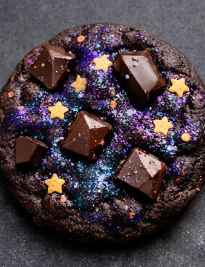
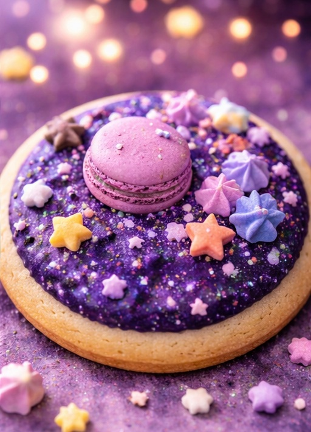

⭐ Sweet Treats from Another Galaxy ⭐
🍪 Fresh Baked Cosmic Favorites 🍪
At Cosmic Coffee, our cookies are made to feel magical, comforting, and fun. We wanted this part of the menu to match the dreamy atmosphere of our café, so each cookie is inspired by stars, planets, moonlight, and soft cosmic colors. Some of our most loved flavors include Galaxy Chocolate Chunk, Strawberry Stardust Sugar Cookie, and Moonbeam Vanilla Sprinkle. Every cookie is baked fresh with care so it tastes just as good as it looks. The soft textures, sweet flavors, and playful designs make them a favorite for both kids and adults. Many customers stop in for coffee and end up falling in love with the bakery case too. Our cookies help make Cosmic Coffee feel like a cozy place where people can relax and enjoy something special.
We believe dessert should be an experience, not just a snack, which is why our cookies are designed to feel creative and memorable. The colors and decorations are meant to match the bright and cheerful feeling of our café while still keeping the menu warm and inviting. Some cookies are rich and chocolatey while others are light, sweet, and colorful with star shaped sprinkles or swirls of pastel icing. They pair perfectly with iced coffee, hot lattes, and other drinks on our menu. The smell of fresh baked cookies adds to the welcoming feeling when guests walk through the door. Sharing cookies with friends or enjoying one during a quiet moment makes the experience even better. At Cosmic Coffee, our cookies are part of what gives the café its fun and unforgettable personality.



